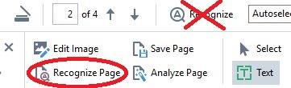

Page Recognition
Excellent page recognition depends on preparing the page properly.
ABBYY FineReader has an excellent algorithm for recognizing text. But it is not perfect. This section details the different steps we take to ensure consistently high accuracy rates. These include
- OCR training
- simple proofing
- adding words to the dictionary
- hand-coding footnotes
- special treatment for author initials at the end of entries
CAUTION:
AFR has two icons for recognizing text. The upper one,
Recognize, will recognize the entire OCR-Project. At 250
pages, this can take a long time. Most of the time, you will want to use the lower icon,
Recognize Page, which limits itself to the current page
displayed in the Image pane.
